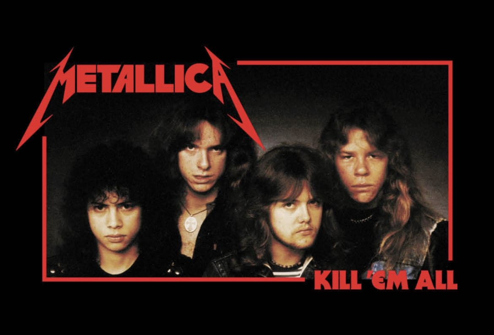

El Thrash Metal es un subgénero extremo del Heavy Metal, caracterizado por su velocidad, agresión y riffs complejos.
Surgió a principios de los 80 en respuesta a la evolución del New Wave of British Heavy Metal (NWOBHM).
VOLVER METALLICA SLAYER MEGADETH ANTHRAX KREATOR